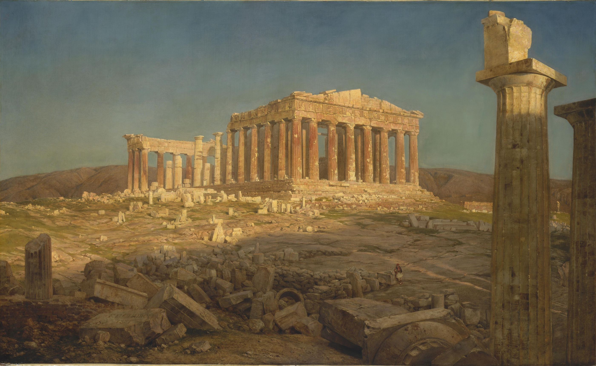
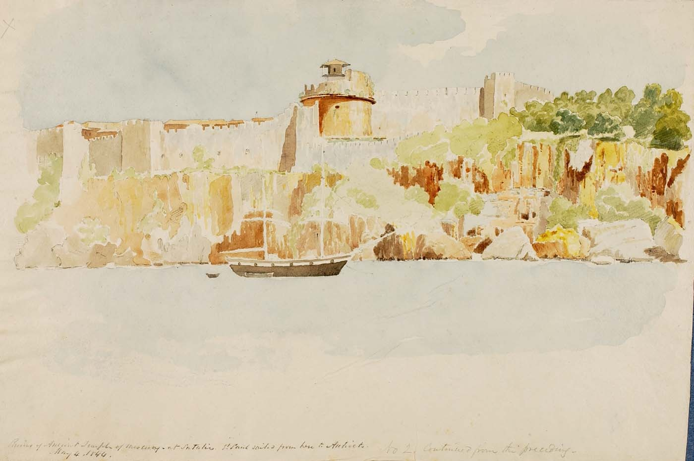
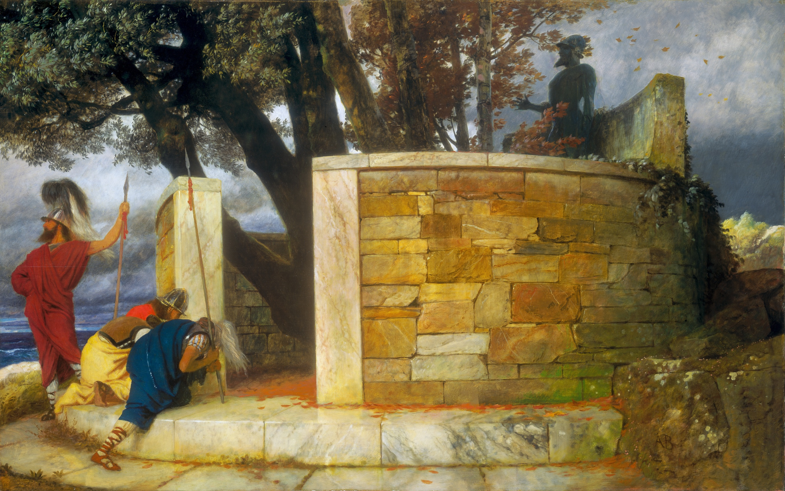
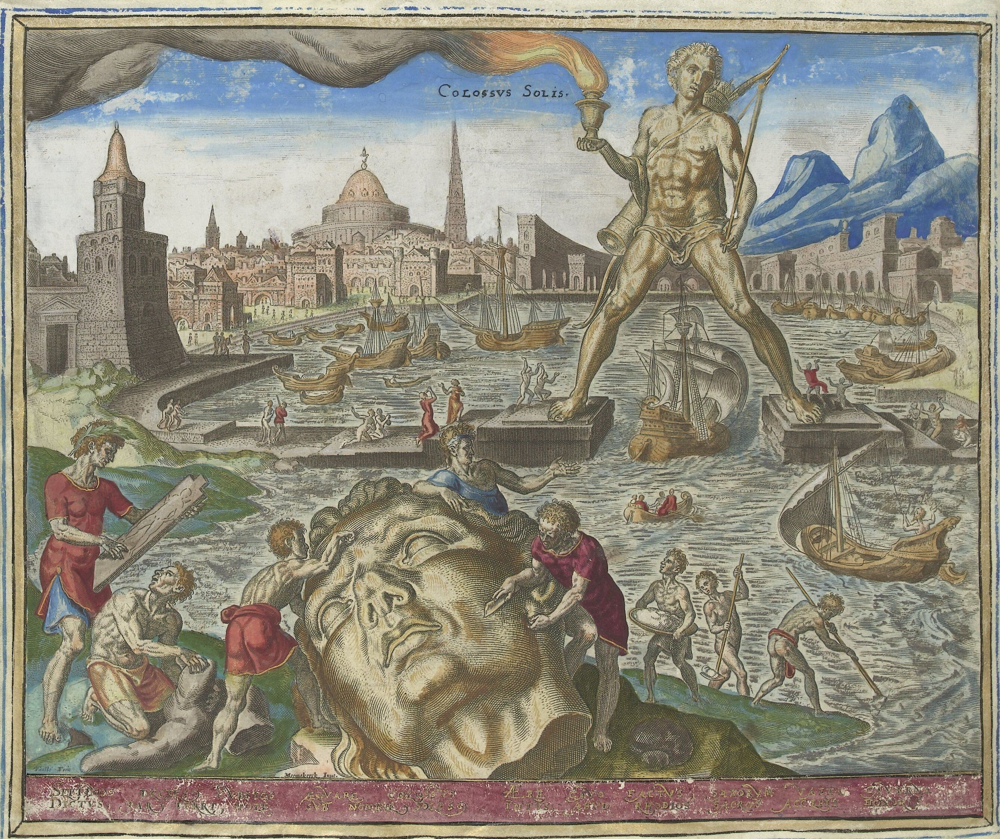
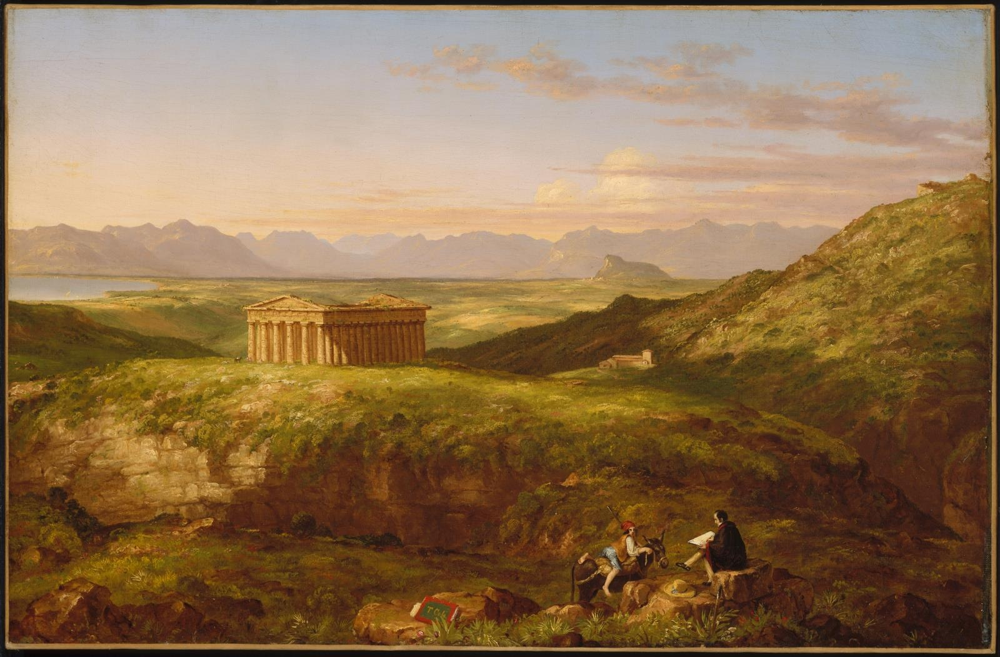
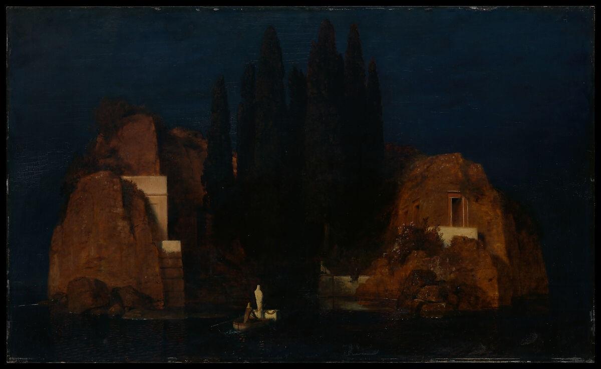
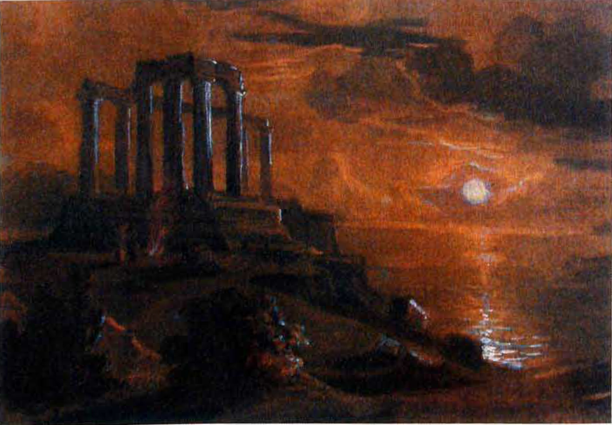
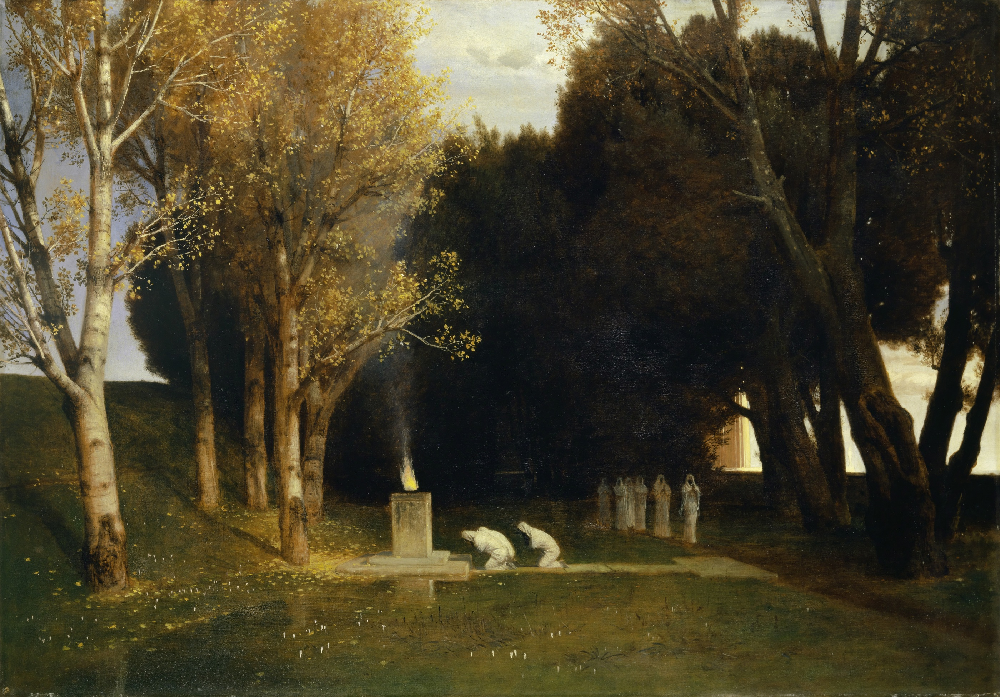
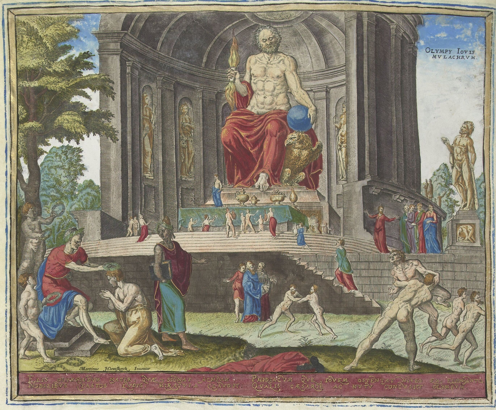
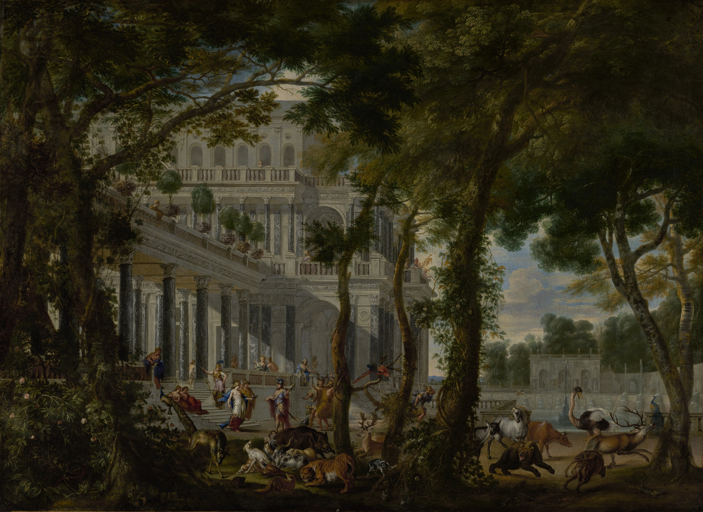

WU · Athena · ARCHIVED CONCEPT — no main slot
Temple of Athena
Temple of Enlightenment

This land enters tapped.
When this land enters, scry 1.
{T}: Add {W} or {U}.
The Parthenon
Frederic Edwin Church · 1871 · The Metropolitan Museum of Art
Retain the colonnade and open sky; reduce foreground rubble before cutting the building. Actual Athena sanctuary depicted as a later ruin, not a reconstruction of the heroic age. User-selected artwork for Temple of Athena. Image acquired and decoded; final crop and print proof remain editable.
Original source and provenance · ART-874
UB · Hermes · ARCHIVED CONCEPT — no main slot
Temple of Hermes
Temple of Deceit

This land enters tapped.
When this land enters, scry 1.
{T}: Add {U} or {B}.
Temple of Mercury
Miner Kilbourne Kellogg · 1844 · Smithsonian American Art Museum
Preserve the temple and water setting. Mercury is the name in the museum title; precise archaeological site and original dedication remain unconfirmed. Do not present this as an archaeologically verified sanctuary of Hermes. User-selected artwork for Temple of Hermes. Image acquired and decoded; final crop and print proof remain editable.
Original source and provenance · ART-875
BR · Ares · ARCHIVED CONCEPT — no main slot
Temple of Ares
Temple of Malice

This land enters tapped.
When this land enters, scry 1.
{T}: Add {B} or {R}.
The Sanctuary of Hercules
Arnold Böcklin · 1884 · National Gallery of Art, Washington
The original is explicitly a sanctuary of Hercules, NOT Ares. The Ares association is a creative reassignment. Preserve the soldiers, enclosing wall and storm-dark grove. User-selected artwork for Temple of Ares. Image acquired and decoded; final crop and print proof remain editable.
Original source and provenance · ART-876
RG · Helios · ARCHIVED CONCEPT — no main slot
Sanctuary of Helios
Temple of Abandon

This land enters tapped.
When this land enters, scry 1.
{T}: Add {R} or {G}.
The Colossus of Rhodes / Colossus Solis
Philips Galle, after Maarten van Heemskerck · 1572 · Rijksmuseum
A Renaissance imagining of Helios's monument, not a secure archaeological reconstruction. Retain the standing colossus and harbour; reduce the fallen-head episode and printed caption where possible. User-selected artwork for Sanctuary of Helios. Image acquired and decoded; final crop and print proof remain editable.
Original source and provenance · ART-877
GW · Demeter · ARCHIVED CONCEPT — no main slot
Temple of Demeter
Temple of Plenty

This land enters tapped.
When this land enters, scry 1.
{T}: Add {G} or {W}.
The Temple of Segesta with the Artist Sketching
Thomas Cole · 1840s (catalogue dates vary) · Museum of Fine Arts, Boston
This is Segesta, NOT a documented temple of Demeter. Preserve the temple's relationship with vegetation and countryside. Demeter is our thematic reassignment; seek a larger reproduction before print lock. User-selected artwork for Temple of Demeter. Image acquired and decoded; final crop and print proof remain editable.
Original source and provenance · ART-878
WB · Hades · RETIRED MAIN DESIGN
Sanctuary of Hades
Temple of Silence

This land enters tapped.
When this land enters, scry 1.
{T}: Add {W} or {B}.
Island of the Dead
Arnold Böcklin · 1880 · The Metropolitan Museum of Art
Use the 1880 Met version, not the Berlin third version already catalogued as ART-292. Symbolic funerary landscape, not a literal Greek cult site. Keep the arriving boat, cypresses and tomb entrances; check dark-image legibility at card size. User-selected artwork for Sanctuary of Hades. Image acquired and decoded; final crop and print proof remain editable.
Original source and provenance · ART-879
UR · Poseidon · RETIRED MAIN DESIGN
Temple of Poseidon
Temple of Epiphany

This land enters tapped.
When this land enters, scry 1.
{T}: Add {U} or {R}.
Temple of Poseidon at Cape Sounion
Karl (Charles) Ross · c. 1839 · Holding collection unconfirmed; Wikimedia Commons reproduction
A literal Poseidon temple. Preserve both the temple and coastal setting. Holding collection unconfirmed; the surviving Classical temple is later than the heroic setting. User-selected artwork for Temple of Poseidon. Image acquired and decoded; final crop and print proof remain editable.
Original source and provenance · ART-880
BG · Persephone · RETIRED MAIN DESIGN
Sacred Grove of Persephone
Temple of Malady

This land enters tapped.
When this land enters, scry 1.
{T}: Add {B} or {G}.
The Sacred Grove / Der heilige Hain
Arnold Böcklin · 1882 · Kunstmuseum Basel
The original does not explicitly depict Persephone. Preserve the ritual grouping and tree canopy; use the grove itself as sanctuary. Reproduction credit: Kunstmuseum Basel, Martin P. Bühler. User-selected artwork for Sacred Grove of Persephone. Image acquired and decoded; final crop and print proof remain editable.
Original source and provenance · ART-881
RW · Zeus · RETIRED MAIN DESIGN
Temple of Zeus
Temple of Triumph

This land enters tapped.
When this land enters, scry 1.
{T}: Add {R} or {W}.
The Statue of Zeus at Olympia
Philips Galle, after Maarten van Heemskerck · 1572 · Rijksmuseum
Use the separate Rijksmuseum Zeus record RP-P-2005-214-26-1 for the subject and attribution; the Commons crop filename inherits its parent album leaf's -26-2 metadata. Renaissance imagining, not an archaeological reconstruction. Emphasise the throne and temple; reduce foreground athletics. User-selected artwork for Temple of Zeus. Image acquired and decoded; final crop and print proof remain editable.
Original source and provenance · ART-882
GU · Circe · RETIRED MAIN DESIGN
Palace of Aeaea
Temple of Mystery

This land enters tapped.
When this land enters, scry 1.
{T}: Add {G} or {U}.
Ulysses at the Palace of Circe
Wilhelm Schubert van Ehrenberg; animals by Carl Borromäus Andreas Ruthart · 1667 · J. Paul Getty Museum
Direct Book X subject: Circe's palace and transformed animals. The palace functions as the sanctuary, not an attested temple; architecture is a seventeenth-century interpretation. Preserve palace, gardens and animals; keep narrative figures secondary. User-selected artwork for Palace of Aeaea. Image acquired and decoded; final crop and print proof remain editable.
Original source and provenance · ART-883